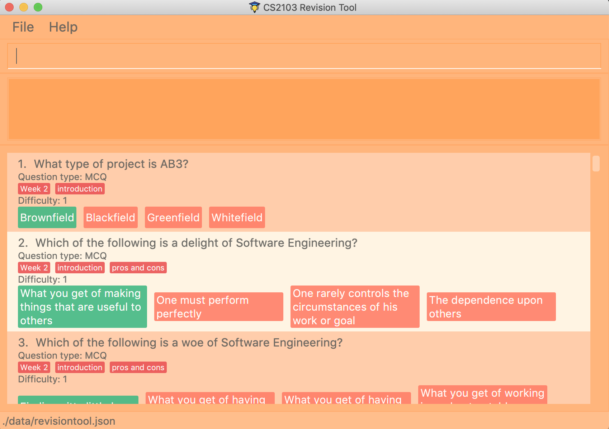

By: Team F10-3 Since: Aug 2019 Licence: MIT
1. Introduction
This portfolio provides an overview of the CS2103/T Revision Tool and highlights my contribution in the project including a brief description of the key features that I implemented.
1.1. The Team
Our team of 5 consists of 2 Year 4 Engineering Science students, a Year 4 Industrial & Systems Engineering student, a Year 3 Communications & New Media student and a Year 2 Computer Science / Business student.
1.2. About the Project
This 7-week project was started as part of NUS' Software Engineering (CS2103/T) module. The team was required to to either morph or enhance an existing application (Address Book - Level 3). Our team decided to morph the project into the CS2103/T Revision Tool (RT) a desktop quiz application which allows users to create customised question banks and attempt the quizzes in an interactive manner. The user interacts with it using a CLI, and it has a GUI created with JavaFX. It is written in Java, and has about 14 kLoC.


2. Summary of contributions
-
Major enhancement: added short answer questions functionality to the application
-
What it does: allows the user to answer questions that are open ended in nature.
-
Justification: This feature improves the product significantly because a user can add and answer questions that cannot be formatted in MCQs or TrueFalse questions style.
-
Highlights: This enhancement required an in-depth analysis of external Natural Language Processing (NLP) libraries to analyse the user input to determine whether the user answered the SAQs correctly. The implementation was challenging as String processing is required and many edge cases had to be taken into account as user could input anything as the answer.
-
Credits: StanfordCoreNLP Library and FuzzyWuzzy Library
-
-
Minor enhancement: helped with minor UI enhancements to display different types of questions correctly.
-
Code contributed: view my code contributions here
-
Other contributions:
-
Documentation:
-
Added FAQs to user guide
-
Added all the user stories for the project to the developer guide.
-
-
Community:
-
Reviewed and merged PRs
-
-
Tools:
-
Integrated a third party library, StanfordCoreNLP and FuzzyWuzzy, to the project
-
-
3. Contributions to the User Guide
Given below are sections I contributed to the User Guide. They showcase my ability to write documentation targeting end-users. |
3.1. Adding SAQ: add
Adds a SAQ to the question bank
Format: `add type/saq q/QUESTION cat/CATEGORY diff/DIFFICULTY y/CORRECT_ANSWER … `
Examples:
-
add type/saq q/What does UML stands for? cat/cs2103 diff/1 y/unified modeling language
3.2. Hints [coming in v2.0]
User will be able to get hints for MCQs and SAQs. Typing '/hint' for MCQs will eliminate two wrong answers from the options, leaving user with two options, one of which is correct. Typing '/hint' for SAQs will show the user random keywords from the correct answer list.
3.3. Pictures/Diagrams [coming in v2.0]
User will be able to upload pictures and diagrams as part of the questions when adding questions to the test bank.
3.4. FAQ
Q: How do I transfer my data to another Computer?
A: Install the app in the other computer and overwrite the empty data file it creates with the file that contains the
data of your previous question bank folder.
Q: Why am I not able to click on the options to select the answers for MCQs and T/F questions?
A: The options are there as a way to show the users the options available. As this is a CLI application, the main
input will be through keyboard inputs.
Q: Can I use this application for another module?
A: Yes you can. This application is designed to store any types of MCQs, T/F and SAQs.
Q: I want to challenge my friends using this application, how can I do it?
A: There is no online support for the application right now. One way you can chanllenge your friend is to prepare the
same json files and load it up to your individual computers and do the quiz together.
4. Contributions to the Developer Guide
Given below are sections I contributed to the Developer Guide. They showcase my ability to write technical documentation and the technical depth of my contributions to the project. |
4.1. Saq feature
4.1.1. How Saq works
The Saq input mechanism is facilitated by SaqInputCommand. It extends Command and execute the CommandResult. The input
will be parse into SaqInputCommandParser to check for input validity. If the input String is not valid (i.e the String
does not start with a letter of number), an invalid command parse exception will be thrown, indicating to user that the
input String requires a letter or a number at the start of the String.
If the input is valid, SaqInputCommand object of type Command will be created. The execute command of the
SaqInputCommand object will be executed. The execute command will call the isCorrect method of Saq to check if the
user input is correct or not.
The activity diagram below shows the steps the user takes to answer an SAQ.

4.1.2. NLP Libraries
External libraries were used to determine if the user input is correct or not. StanfordCoreNLP library was used to
check for sentimental value of user input and the list of correct answers. This helps to check for negative sentence
against a neutral or positive sentence (eg. "not a uml diagram" and "it’s a uml diagram"). The FuzzyWuzzy library was
also used to determine the similarity percentage of the user input to the correct answer using fuzzy string matching
technique.
The class diagram below shows the relationship between the classes that are used to validate the correctness of the user input.
4.1.3. Validating the answer
The execute method will return the CommandResult, correct or wrong. The currentAnswerable of type Saq will call its
isCorrect method and return a boolean value, true for correct answer and false for wrong answer. The sequence diagram
below shows the steps taken by the isCorrect method to determine if the user input is correct or wrong.
4.2. User Stories
Priorities: High (must have) - * * *, Medium (nice to have) - * *, Low (unlikely to have) - *
| Priority | As a … | I want to … | So that I can… |
|---|---|---|---|
|
lazy CS2103 student |
refer to the revision tool solely for my consolidated module revision |
do not have to refer to Luminus |
|
CS2103 student |
have a personalised application to store all my questions and answers in one place |
refer to it conveniently for revision. |
|
CS2103 student |
have a revision tool to test my coding skills and concepts through writing short codes |
test myself on coding proficiency too. |
|
CS2103 student |
keep track and see how much progress I have made in completing the questions |
gauge my level of progress in completing the syllabus. |
|
vim-using CS2103/T student |
use the keyboard-based commands |
further increase my efficiency |
|
busy CS2103/T |
use quick revision tools |
learn using spaced-retrieval |
|
busy CS2103 student |
mark certain concepts as easy |
will not have to spend as much time studying the easy concepts. |
|
CS2103 student with a lot of things on my mind |
mark certain questions that I am unsure of |
refer back to the question when I am free. |
|
CS2103 student |
import questions from my peers |
study on my own. |
|
conscientious CS2103 student |
export the questions I am unsure of |
raise them up during tutorials. |
|
indecisive student |
be recommended questions instead of me having to plan my own study plan |
go directly to studying |
|
competitive CS2103 student |
at least know where I stand among my cohort |
look at who is the next person I can beat. |
|
gamer CS2103/T student |
accomplish tasks that give me a sense of achievement, preferably through in application rewards |
I feel good. |
|
A+ CS2103 student |
review and give suggestions to improve the application |
benefit more CS2103 students. |
|
CS2103 student |
port this application over to my other modules |
revise for my other modules using this application as well. |
|
unorganized CS2103 student |
get reminders about my quiz deadlines |
complete my quizzes on time |
|
organized CS2103 student |
schedule reminders to remind me when I should use the application to do revision |
will not forget to do revision. |
|
user of the application |
get an estimate of my final grade for CS2103 |
know what to expect on result release day. |
|
CS2103 peer tutor |
use this as a form of teaching tool |
teach better |
|
CAP 5.0 CS2103 student |
show off my IQ by perfecting my test scores |
motivate other students. |
|
CS2103 student |
view the questions/topics that most students answered wrongly |
revise for those topics. |
|
visual oriented student |
the app to have different colours as compared to the regular black and white |
learn better |
|
non-motivated CS2103 student |
use the application to remind me to study |
I will study |
|
student that wants shortcuts |
type a partial command and have it be auto-completed |
I can save time. |
|
CS2103 student new to Git |
have a help function which lists all the commonly used Git commands |
become more proficient with Git. |
|
master software engineer taking CS2103 |
be able to access the source code |
to make the application better and customise it for myself. |
|
CS2103 student |
get recommended a list of questions that I frequently get wrong |
learn from my mistakes |
|
lonely CS2103 student |
have someone to talk to, even if it’s a computer |
I won’t feel lonely |
|
CS2103 student who keeps having stomach ache |
the application to tell me where the nearest toilet is |
go and shit |